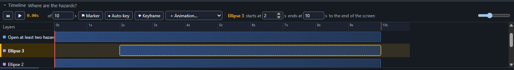
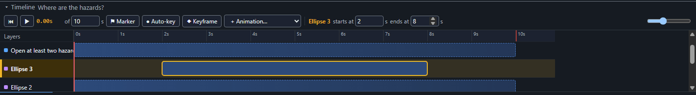

Set when an item appears and disappears (start and end times)
Select an item on the stage or on the timeline. Its row on the timeline turns amber, and the timeline's toolbar shows its name with starts at and ends at, in seconds. Type a time in either box to move that edge of its bar; dragging the bar or its edges still works and the boxes follow. If the item stays until the screen ends, the toolbar says to the end of the screen; type an earlier ends at to end it sooner, or the length of the screen to put it back. For a sound, starts at moves the whole sound and ends at trims it.
After typing 2 in the starts at box, the bar begins at the 2 second mark:

After typing 8 in the ends at box, the bar stops at 8 seconds and the words to the end of the screen are gone:

Amber means selected everywhere you pick things from a list: the timeline and the Layers panel.
Layers with the keyboard. Tab to a row in the Layers panel (or the Reading order list), use the Up and Down arrow keys to move between rows, press Enter to select the row (Shift+Enter adds it to the selection) and F2 to rename it. Each row's buttons say which item they are for, for example Hide Begin on stage and Lock Begin, so a screen reader can tell them apart.